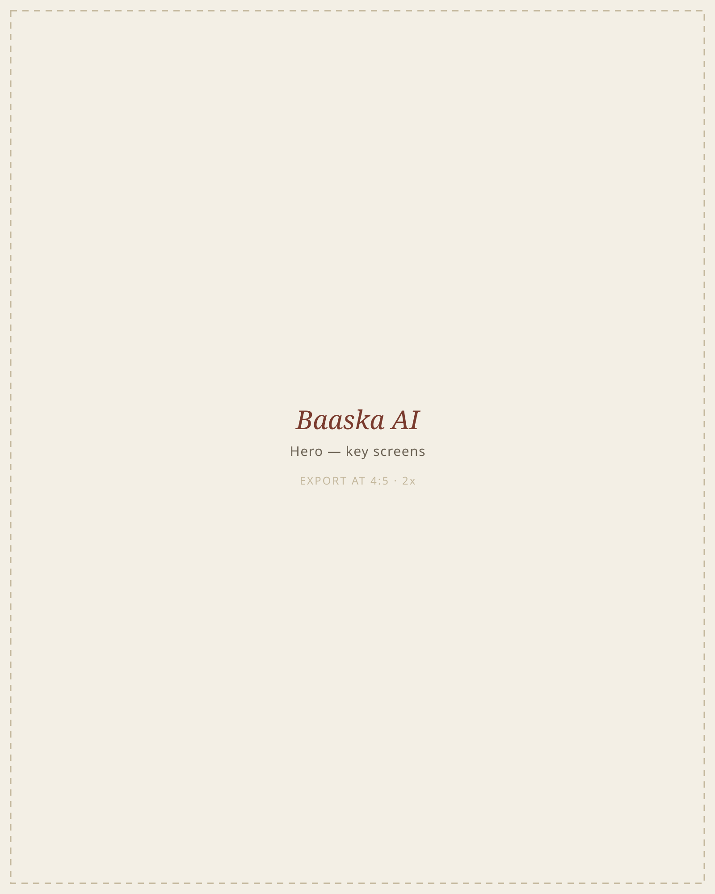
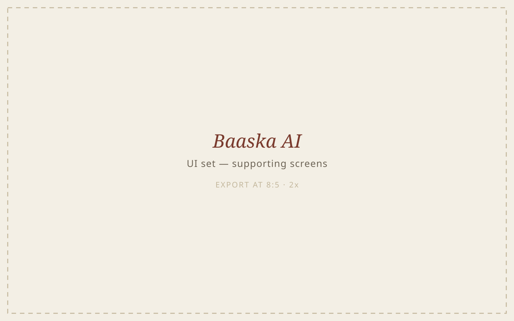

Baaska AI
TODO — replace. One or two sentences on what it is, who it was for, and the problem it set out to solve.
TODO — replace. What was hard about it, and what you decided.
- 01TODO — what you actually did
- 02TODO — and the next thing
- 03TODO — and the next

